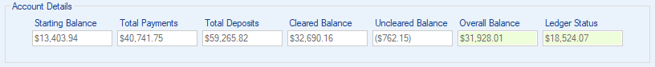

Account Details

Your account details display the account information for the currently opened ledger. This information is updated with every change you make to your ledger. Overall Balance and Ledger Status will be highlighted with either green (positive) or red (negative). Below you will find each value and its description.
- Starting Balance: The amount used to begin calculating your overall balance. When creating a new ledger your starting balance will be your account balance from your most recent bank statement or from the bank statement of the month in which you wish to begin entering transactions.
- Total Payments: Total amount of payment transactions in your ledger. (see Transactions)
- Total Deposits: Total amount of deposit transactions in your ledger. (see Transactions)
 Cleared Balance: Total amount of only the transactons that have been cleared. Once a transaction goes through your bank the transaction can be cleared. Your monthly bank statements outline
all the transactions that went through during that month. Balancing your checking account by clearing transactions with your bank statements will let you know how much money you actually have in your account versus
the amount your bank knows about. For example you may have pending transactions, so your Overall Balance will be different than your Cleared Balance. (see Balance Account)
Cleared Balance: Total amount of only the transactons that have been cleared. Once a transaction goes through your bank the transaction can be cleared. Your monthly bank statements outline
all the transactions that went through during that month. Balancing your checking account by clearing transactions with your bank statements will let you know how much money you actually have in your account versus
the amount your bank knows about. For example you may have pending transactions, so your Overall Balance will be different than your Cleared Balance. (see Balance Account)
- Uncleared Balance: Total amount of only the transactons that have not been cleared. (see Balance Account)
- Overall Balance: The result of your starting balance minus total payments, plus total deposits. The actual amount you have available in your account.
- Ledger Status: The result of your total deposits minus total payments. This amount lets you know if your ledger is positive or negative.